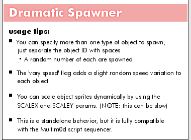

dramatic_spawner.lua |
|
|---|---|
|
Dramatic Spawner v1.9 Standalone & Multim0d-compatible nov 10 2009 @jme Spawns multiple objects, of multiple types and slides them to a destination point. Optional "portal" object, spawn sound and object scaling. Properties section |
|
|
Metaplace Lua included script state variables via properties that could be hidden, exposed or persisted. Here there are "constant" properties as well as user-config properties. Vars deemed contstant-by-convention are indicated by ALL CAPS |
Define Properties()
im_running = false
portal = {}
herd = {}
|
|
Specify the call signature here. This is just an informative string and should indicate all parameters (in order) needed to manually call this plugin. Param onchanges are caught and reverted, SEE "parm_changed" method |
PARAMS_SIGNATURE = " DELAY(ms), #OBJECTS-SPAWNED, OBJECTS(separated by spaces), OBJECT LIFETIME(ms), OBJ SPEED(ms), VARY OBJ SPEED? (0 or 1), PORTAL, PORTAL_LIFETIME(ms), SOUND-ID, VOLUME, Xo, Yo, Zo, Xp, Yp, Zp, SCATTER, SCALEX, SCALEY "
PARAMS_SIGMSG = "Parameter sig for Multim0d manual mode usage (optional)"
|
|
declare default and/or hot-start values for any public properties. |
MOD_DS_QUANTOS = 1
MOD_DS_X0 = 5
MOD_DS_Y0 = 5
MOD_DS_Z0 = 127
MOD_DS_SOUND = '24050:127'
MOD_DS_VOLUME = 125
MOD_DS_XP = 7
MOD_DS_YP = 7
MOD_DS_ZP = 127
MOD_DS_SCATTER = 6
MOD_DS_PORTAL_LINGER_MS = 800
MOD_DS_LINGER_MS = 2500
MOD_DS_SPEED_MS = 700
MOD_DS_USE_AVG_SPEED = 1
MOD_DS_DEF_PORTAL = '181859:42'
MOD_DS_DEF_OBJECTS = '181859:43'
MOD_DS_DELAY = 0
MOD_DS_SCALEX = 0
MOD_DS_SCALEY = 0
|
|
A silly Tools issue provoked this bit of egregiousness. |
param_count = 19
|
|
User-accessible Properties |
mod_ds_delay = MOD_DS_DELAY
PersistProperty('mod_ds_delay')
ExposeProperty('mod_ds_delay', 'Startup delay (ms) [default: ' ..MOD_DS_DELAY .."]")
mod_ds_quantos = MOD_DS_QUANTOS
PersistProperty('mod_ds_quantos')
ExposeProperty('mod_ds_quantos', 'Total # of objects to spawn [default: ' ..MOD_DS_QUANTOS .."]")
mod_ds_objects = MOD_DS_DEF_OBJECTS
PersistProperty('mod_ds_objects')
ExposeProperty('mod_ds_objects', 'Object IDs to spawn (separated by spaces) [default: ' ..MOD_DS_DEF_OBJECTS .."]")
mod_ds_linger_ms = MOD_DS_LINGER_MS
PersistProperty('mod_ds_linger_ms')
ExposeProperty('mod_ds_linger_ms', 'Lifetime of spawned objects (ms) [default: ' ..MOD_DS_LINGER_MS .."]")
mod_ds_speed_ms = MOD_DS_SPEED_MS
PersistProperty('mod_ds_speed_ms')
ExposeProperty('mod_ds_speed_ms', 'Move spawned objects at this rate (ms) [default: ' ..MOD_DS_SPEED_MS .."]")
mod_ds_use_avg_speed = MOD_DS_USE_AVG_SPEED
PersistProperty('mod_ds_use_avg_speed')
ExposeProperty('mod_ds_use_avg_speed', 'Vary object speed [default: ON]', 'checkbox')
mod_ds_portal = MOD_DS_DEF_PORTAL
PersistProperty('mod_ds_portal')
ExposeProperty('mod_ds_portal', 'Portal object (blank for none) [default: ' ..MOD_DS_DEF_PORTAL .."]")
mod_ds_portal_linger_ms = MOD_DS_PORTAL_LINGER_MS
PersistProperty('mod_ds_portal_linger_ms')
ExposeProperty('mod_ds_portal_linger_ms', 'Portal lifetime (ms) [default: ' ..MOD_DS_PORTAL_LINGER_MS .."]")
mod_ds_sound = MOD_DS_SOUND
PersistProperty('mod_ds_sound')
ExposeProperty('mod_ds_sound', 'Sound to play with spawning [default: ' ..MOD_DS_SOUND .."]")
mod_ds_volume = MOD_DS_VOLUME
PersistProperty('mod_ds_volume')
ExposeProperty('mod_ds_volume', 'Volume of spawn sound (blank for none) [default: ' ..MOD_DS_VOLUME .."]")
SetPropRange('mod_ds_volume',0,255)
mod_ds_x0 = MOD_DS_X0
PersistProperty('mod_ds_x0')
ExposeProperty('mod_ds_x0', 'Spawn point, x-value [default: ' ..MOD_DS_X0 .."]")
mod_ds_y0 = MOD_DS_Y0
PersistProperty('mod_ds_y0')
ExposeProperty('mod_ds_y0', 'Spawn point, y-value [default: ' ..MOD_DS_Y0 .."]")
mod_ds_z0 = MOD_DS_Z0
PersistProperty('mod_ds_z0')
ExposeProperty('mod_ds_z0', 'Spawn point, z-value [default: ' ..MOD_DS_Z0 .."]")
mod_ds_xp = MOD_DS_XP
PersistProperty('mod_ds_xp')
ExposeProperty('mod_ds_xp', 'Destination point, x-value [default: ' ..MOD_DS_XP .."]")
mod_ds_yp = MOD_DS_YP
PersistProperty('mod_ds_yp')
ExposeProperty('mod_ds_yp', 'Destination point, y-value [default: ' ..MOD_DS_YP .."]")
mod_ds_zp = MOD_DS_ZP
PersistProperty('mod_ds_zp')
ExposeProperty('mod_ds_zp', 'Destination point, z-value [default: ' ..MOD_DS_ZP .."]")
mod_ds_scatter = MOD_DS_SCATTER
PersistProperty('mod_ds_scatter')
ExposeProperty('mod_ds_scatter', 'Destination scatter value [default: ' ..MOD_DS_SCATTER .."]")
mod_ds_scalex = MOD_DS_SCALEX
PersistProperty('mod_ds_scalex')
ExposeProperty('mod_ds_scalex', 'sprite scale for x-axis (can be slow) [default: ' ..MOD_DS_SCALEX .."]")
mod_ds_scaley = MOD_DS_SCALEY
PersistProperty('mod_ds_scaley')
ExposeProperty('mod_ds_scaley', 'sprite scale for y-axis (can be slow) [default: ' ..MOD_DS_SCALEY .."]")
|
|
Param sig for use with MultiM0d Just placing this at bottom to avoid confusion. |
mod_ds_signature = PARAMS_SIGNATURE
ExposeProperty('mod_ds_signature', PARAMS_SIGMSG)
|
|
Standard required tool version, name and description fields Change to match your needs |
bt_behavior = 1
bt_name = 'dramatic_spawner'
bt_desc = 'Dramatic Spawner: (Multim0d compatible)'
bt_help_image = '181859:544'
bt_help_image_height = 278
end
|
Methods and Handlers[ Triggers would be called by the sim serverside, given the appropriate conditions ] |
|
|
[Required Boilerplate] This is a mild bit of hackery. The Call Signature of an effect needed to be displayed on the Behavior Tool, but there was no way to write R/O text, only text that could be potentially altered by the user. As a workaround each Multim0d effect would respond to the BT onchange trigger in order to revert attempted changes to any public properties that needed to be R/O, such as the call signature. |
Trigger param_changed(owner, owner_id, script_id, prop)
local pname = self.bt_name .."_signature"
if (prop == pname) then
Debug("< SIG CHANGED > " .."script_id=" ..script_id .." owner_id=" ..owner_id)
SendTo(self, 'set_script_param', 0, owner, owner.id, script_id, prop, self.PARAMS_SIGNATURE)
Debug("reverting signature, you silly rabbit!")
end
end
|
|
Just the Lua Standard reference method for comma-separated variable handling, tweaked to use any separater character. |
function from_tsv(s,token)
s = s ..token
local t = {}
local fieldstart = 1
repeat -- next field is quoted? (start with `"'?)
if string.find(s, '^"', fieldstart) then
local a, c
local i = fieldstart
repeat -- find closing quote
a, i, c = string.find(s, '"("?)', i+1)
until c ~= '"' -- quote not followed by quote?
if not i then error('unmatched "') end
local f = string.sub(s, fieldstart+1, i-1)
table.insert(t, (string.gsub(f, '""', '"')))
fieldstart = string.find(s, token, i) + 1
else -- unquoted; find next comma
local nexti = string.find(s, token, fieldstart)
table.insert(t, string.sub(s, fieldstart, nexti-1))
fieldstart = nexti + 1
end
until fieldstart > string.len(s)
return t
end
|
|
Shutdown [API, REQUIRED] Vary the internals as desired, just be sure to invoke a crisp shutdown! |
Trigger mod_ds_shutdown()
self.im_running = false
SendTo(self,'multimod_cmd_done',10)
Debug(self.bt_name .." shutdown!")
end
|
|
core function
|
Trigger dramatic_spawner()
Debug(self.bt_name .." - runnning -")
table.clear(self.herd)
table.clear(self.portal)
if (self.mod_ds_portal ~= '') then
the_portal = CreateObjectById(self.mod_ds_portal, self.mod_ds_x0-1, self.mod_ds_y0-1, self.mod_ds_z0, 0)
the_portal.lifetime = self.mod_ds_portal_linger_ms
table.insert(self.portal,the_portal)
end
local obtable = from_tsv(self.mod_ds_objects,' ')
local xid = self.MOD_DS_DEF_OBJECTS
local ixp = 1
local iyp = 1
if (self.mod_ds_sound ~= '') then
local soundHandleId = PlaySoundPlace(self.mod_ds_sound, self.mod_ds_volume, 0)
end
if (#obtable > 0) then
for i =1,self.mod_ds_quantos do
xid = obtable[math.random(#obtable)]
theob = CreateObjectById(xid, self.mod_ds_x0, self.mod_ds_y0, self.mod_ds_z0, 0)
theob.lifetime = self.mod_ds_linger_ms
if (self.mod_ds_scalex > 0) then
theob.spriteScaleX = self.mod_ds_scalex
end
if (self.mod_ds_scaley > 0) then
theob.spriteScaleY = self.mod_ds_scaley
end
table.insert(self.herd,theob)
if (self.mod_ds_scatter > 0) then
ixp = math.random(self.mod_ds_scatter) + self.mod_ds_xp
iyp = math.random(self.mod_ds_scatter) + self.mod_ds_yp
else
ixp = self.mod_ds_xp
iyp = self.mod_ds_yp
end
if (self.mod_ds_use_avg_speed == 1) then
SlideObject(theob, ixp, iyp, self.mod_ds_zp, math.random(self.mod_ds_speed_ms/2) + self.mod_ds_speed_ms, 1)
else
SlideObject(theob, ixp, iyp, self.mod_ds_zp, self.mod_ds_speed_ms, 1)
end
end
end
SendTo(self,'mod_ds_shutdown',self.mod_ds_linger_ms)
end
|
|
Validate [API, Optional] Parameter validations. Validations will probably be custom for each effect, |
function mod_ds_validate_params(owner,p)
p[1] = math.abs(p[1])
p[2] = math.abs(p[2])
p[4] = math.abs(p[4])
p[5] = math.abs(p[5])
p[6] = math.abs(p[6])
if (p[6] > 1) then
p[6] = 1
end
p[8] = math.abs(p[8])
p[10] = math.abs(p[10])
if (p[10] > 255) then
p[10] = 255
end
p[11] = math.abs(p[11])
p[12] = math.abs(p[12])
p[13] = math.abs(p[13])
p[14] = math.abs(p[14])
p[15] = math.abs(p[15])
p[16] = math.abs(p[16])
p[17] = math.abs(p[17])
p[18] = math.abs(p[18])
p[19] = math.abs(p[19])
end
|
|
[API, Required] : accept/handle manual shutdown commands |
Trigger mod_cmd_shutdown()
self.im_running = false
Debug(self.bt_name .." : Got Manual shutdown message!")
end
|
|
Trigger for standalone usage |
Trigger use(user)
if (self.multimod_present == nil) then
Debug("Multim0d not found. Running standalone...")
if (self.im_running == false) then
self.im_running = true
SendTo(self,self.bt_name,self.mod_ds_delay)
else
Debug("Not yet!")
end
else
Debug("Got Multim0d.")
end
end
|
|
This is the new API startup, here just a wrapper to facilitate legacy calls. Won't need this in the future, but is here a work-around for the deployed base. |
Trigger dramatic_spawner_startup(xparams)
SendTo(self,'dramatic_spawner_start',0,0,0,0,0,xparams)
end
|
|
(LEGACY) Main multimod entry point for the effect This is called by the Player and is passed X & Y origin coords, span width & height values and finally a Player-opaque, possibly empty table of support params. This call starts the plugin running and should toggle on/off cleanly.
|
Trigger dramatic_spawner_start(x0,y0,xr,yr,xparams)
if (self.im_running == false) then
self.im_running = true
if (#xparams ~= 0) then
if (#xparams == self.param_count) then
mod_ds_validate_params(self,xparams)
self.mod_ds_delay = xparams[1]
self.mod_ds_quantos = xparams[2]
self.mod_ds_objects = xparams[3]
self.mod_ds_linger_ms = xparams[4]
self.mod_ds_speed_ms = xparams[5]
self.mod_ds_use_avg_speed = xparams[6]
self.mod_ds_portal = xparams[7]
self.mod_ds_portal_linger_ms = xparams[8]
self.mod_ds_sound = xparams[9]
self.mod_ds_volume = xparams[10]
self.mod_ds_x0 = xparams[11]
self.mod_ds_y0 = xparams[12]
self.mod_ds_z0 = xparams[13]
self.mod_ds_xp = xparams[14]
self.mod_ds_yp = xparams[15]
self.mod_ds_zp = xparams[16]
self.mod_ds_scatter = xparams[17]
self.mod_ds_scalex = xparams[18]
self.mod_ds_scaley = xparams[19]
else
Debug(self.id ..": " ..self.bt_name .." ERROR: Manual mode: incorrect number of playlist params")
Debug('required: ' ..self.param_count .."params, got " ..#xparams )
end
end
SendTo(self, self.bt_name, self.mod_ds_delay)
else
Debug(self.bt_name ..' sez: not yet...')
self.im_running = false
end
end
|